How Web Design Changed for Me, and for the World
Table of Contents
Introduction
I started web development at a very young age, and creating a personal website has always been a rewarding activity. Before arriving at this version, I regularly created multiple iterations of my site, each with a different interface. At first, I was afraid of CSS, so I started by building simple sites with just text and ../../images. Today, I've returned to that simplicity—but for different reasons. I've archived some of my site versions since 2023, which I'd like to show you.
My site that you should talk to
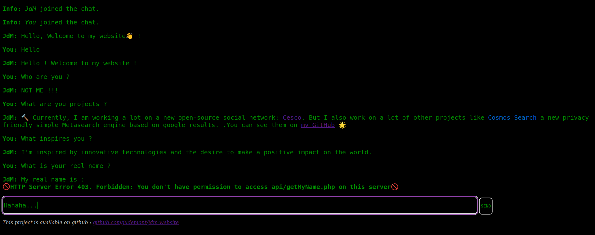
futureofthe.tech/history/v1
In 2023 (I was 14), I created a site with the goal of rethinking user interfaces in a completely different way. On this site, you can talk to a script that answers you in a way that's somewhat similar to how I would. It's not an AI, but a list of questions and answers. When you ask something, the script finds the most similar question in its list and responds accordingly—sometimes with a bit of humor.
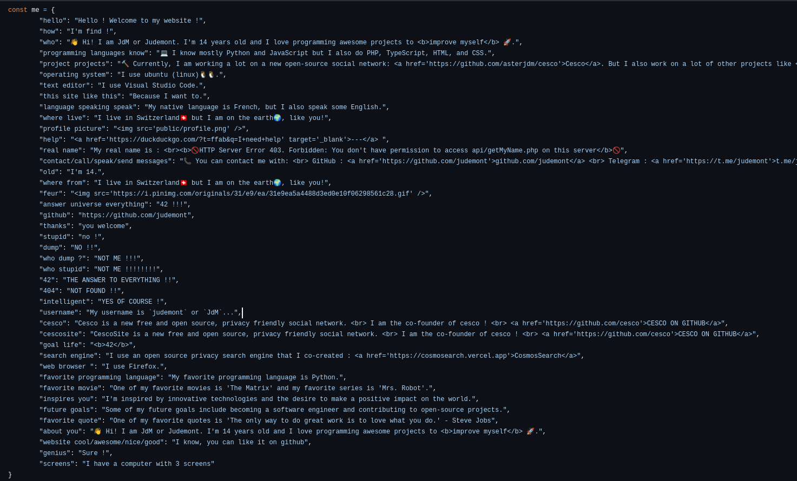
It wasn't really a good interface, as the information wasn't easy to find, and often my script didn’t have an answer.
But I still find the idea very interesting. The goal of the site wasn’t to directly display content to the visitor, but to let them ask the robot for what they wanted.
In a way, the concept was a bit visionary. With the rise of language models, it’s now common to see conversational agents we can interact with on websites.
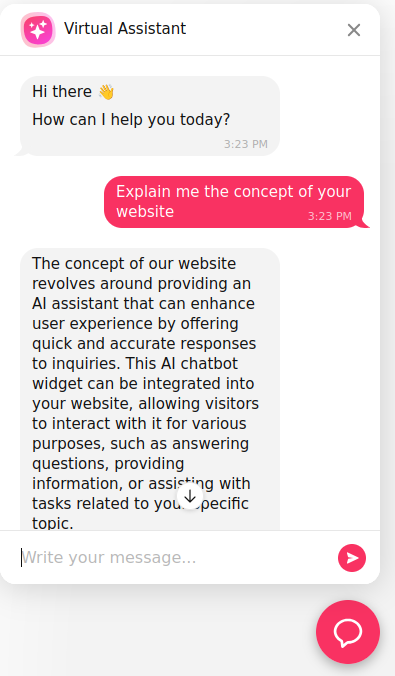
These chatbots often use the OpenAI API, with an initial prompt that includes the page content and other site information.
For now, these chatbots are just another feature of traditional websites. But who knows? Maybe in the near future, websites will stop presenting content directly. Instead, we’ll ask the chatbot questions to find what we’re looking for.
We won't be visiting sites—we’ll be talking to them.
My site with no purpose
In 2023, I created the strangest version of my personal website. It displayed my logo with social links and cycled through random programming jokes or sentences every few seconds.
What’s strange is that when you scroll, there’s no new content. Instead, a spinning tourbillon appears in the background, a screaming audio track plays, and the page stretches for endless scrolling.
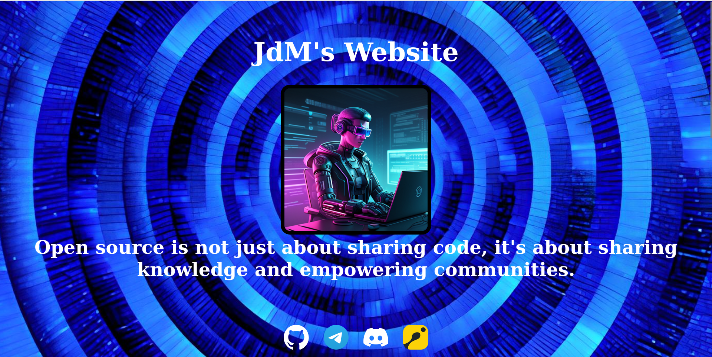
futureofthe.tech/history/v2
You might ask what the purpose of this strange idea was. I could say it was an artistic project, or that it was fun.
But no. It was none of that. I built the site simply because I had nothing else to do. I had just started learning web development and was amazed by the infinite creative possibilities. I didn’t make the site for money, or for school, or even to share anything with the world.
For me, the purpose of a website wasn’t to display content with a polished design and specific goal.
For me, a site was just a way to experiment, explore, and learn.
A more professional website
By the end of 2023, I had improved a lot in web development and wanted to use my new skills to improve my site. So I made a new version. Compared to the previous ones, this one was much better. It wasn’t just an experiment—it was a real presentation website with content and an organized design.
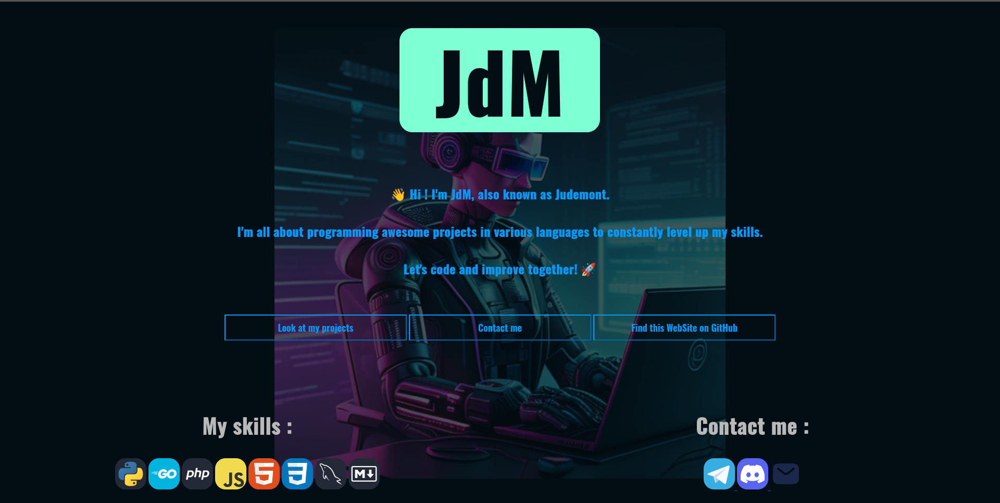
futureofthe.tech/history/v3
This version was simple but pretty.
My websites that wanted to be more than just websites
In 2024 and 2025, I created several versions of my site. I wanted them to be more impressive, with more animated elements. I wanted to wow visitors with beauty and interactivity.
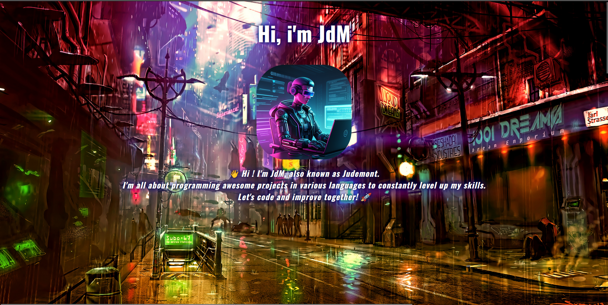
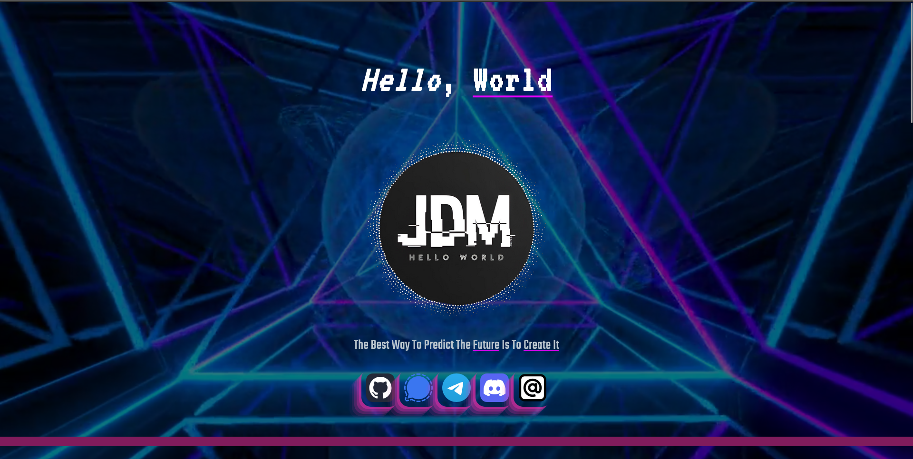
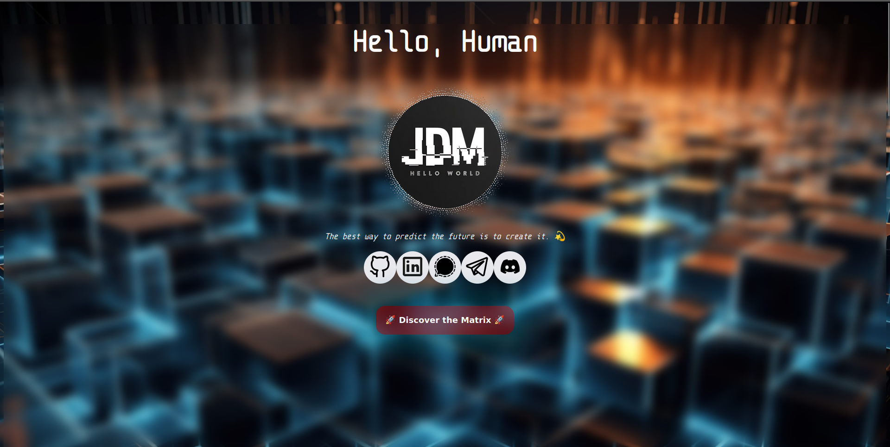
futureofthe.tech/history/v4
futureofthe.tech/history/v5
futureofthe.tech/history/v6
The goal of those sites wasn’t just to display content but to offer a visual experience. In my mind, the result was incredible. But I forgot something: I’m not a web designer, and good design is hard. So these sites weren’t that great.
My determination to make something impressive made the site less readable, less organized, and ultimately—not that good.
My site that wasn’t mine
In 2025, I accepted the truth: I’m not a good web designer. And honestly, I don’t enjoy it. But I still wanted a good-looking site, and I had a solution: I created the HTML content and asked the AI "Claude" to generate the CSS design.
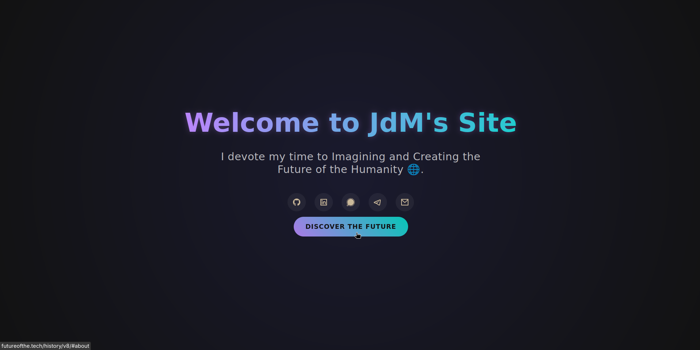
futureofthe.tech/history/v8
The result looked good, the design was pretty. But... there were two problems. First, I didn’t like it: yes, it was pretty, but it wasn’t my site. I hadn’t made it—it didn’t reflect me.
Second, after visiting several AI-generated websites, I noticed how similar they all looked. AIs are good at creating design, but they lack one key quality of a designer: creativity. If websites are all designed by AIs in the future, there will be no originality. That would be a shame.
What is the purpose of a website?
In January 1991, the first public web servers were turned on. On August 6, 1991, Tim Berners-Lee published a short summary of the World Wide Web project. Let’s take a look at the page.
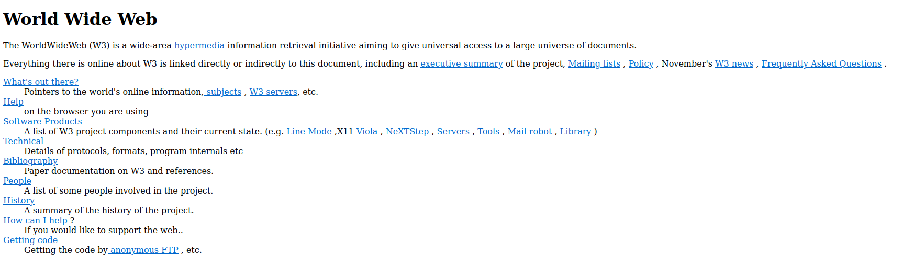
info.cern.ch/hypertext/WWW/TheProject.html
The page is just black text on a white background with blue links. It’s not pretty or impressive. But was that the goal? Was Berners-Lee trying to build an impressive page full of animations and interactive elements?
No, it wasn’t. For one, CSS didn’t exist. But more importantly, that wasn’t the point. The sole purpose of that page was to introduce the World Wide Web. And it succeeded. It’s organized, readable, and the whole site weighs only 2.17 KB.
Would it really be better if the site had a modern design?
I asked Claude to generate a modern CSS design for the page. Here’s the result:
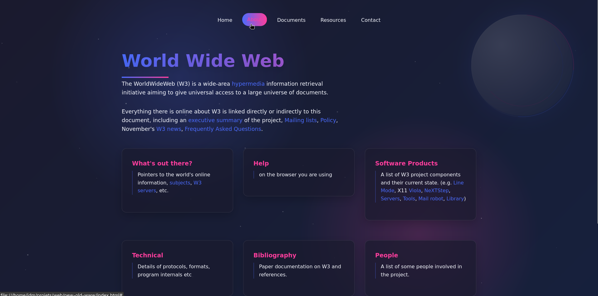
claude.site/artifacts/2d805b4b-9e50-42b2-8b0e-c0c12fedfd0b
Yeah! The design is much better!
But now the page weighs 57 KB. And... sure, it’s prettier. But the information isn’t any easier to find, and the structure isn’t improved.
The original page gets straight to the point. With the modern AI design, the page looks good—but doesn’t help you understand the content better.
Before I was born, the purpose of a website was to share information.
But what about now?
Why my website isn't beautiful, and why I don't care
This section is outdated. My site is now powered by Zola.
This site isn’t pretty or impressive. There’s no elaborate design or animations. It’s just white text on a black background. By modern standards, this isn’t attractive.
But when I created it, I thought about its purpose—its reason to exist online. And here’s my conclusion: I created this site to share ideas, information, and my view of the world. Not to impress people with design.
Keeping the design simple is the best way to focus on what matters: the content and purpose.
Design ≠ Credibility
Very often, the flashiest sites have little substance and no clear purpose. Some of the most beautiful sites I’ve seen are from blockchain or AI projects. But that doesn’t mean they’re credible—often, they’re not.
Take the most serious blockchain project: Bitcoin. Its "official" website is bitcoin.org.
The design is basic, but the content is readable and right there on the homepage.
Now compare that to a less serious blockchain project. Here’s the archived site for Terra, a blockchain protocol that suddenly collapsed in 2022:
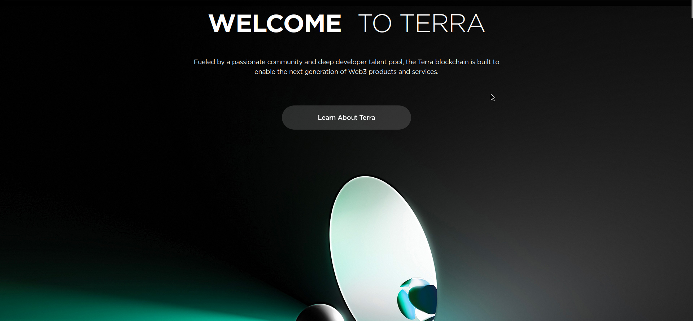
terra.money (archive.org)
I encourage you to visit the archive. The design is stunning.
But flashy design is often used to hide the lack of real content.
Think about the most content-rich site on the Internet: Wikipedia. It’s literally just black text on a white background.
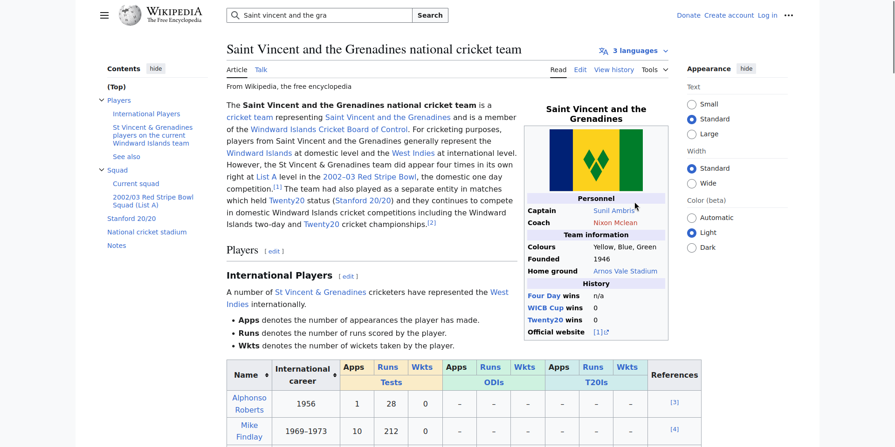
Wikipedia wouldn’t be better with flashy design. Because content is what really matters.
Conclusion
We've explored many ways to present a website. No one knows what tomorrow’s sites design will be. But one thing’s clear: I’ve found what suits me.
A simple design is ultimately the best way for me to share my ideas.
And since you're reading this now, it's a success.